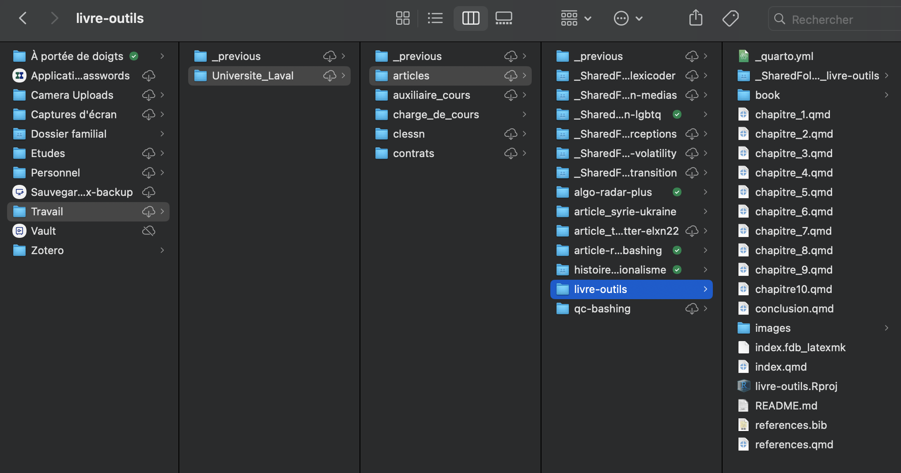
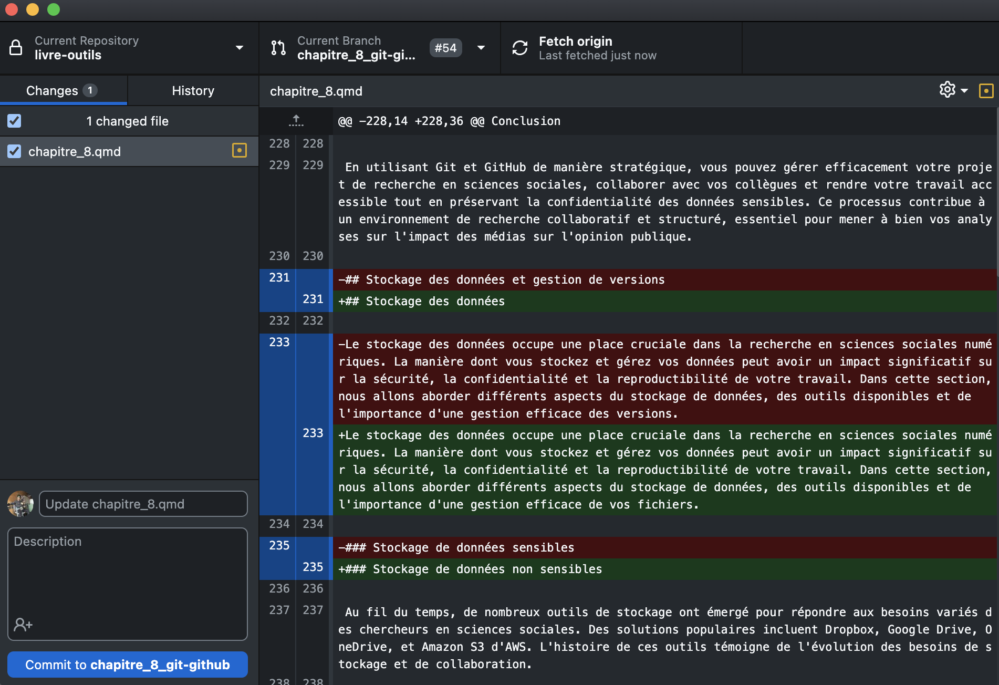

3 À la quête de l’optimisation
Le monde de la recherche en sciences sociales numériques est en constante évolution, offrant de nouvelles opportunités mais aussi des défis uniques. Dans cette quête incessante pour optimiser notre efficacité et notre collaboration, l’utilisation des bons outils devient la clé de la réussite. Que vous soyez un chercheur en herbe ou un professionnel chevronné, la manière dont vous organisez vos méthodes de travail et gérez vos ressources peut déterminer la qualité et l’impact de vos résultats.
3.1 L’importance d’une méthode de travail efficace
Avant même de plonger dans les détails des méthodes de recherche et des analyses, il est crucial de poser les bases d’une méthode de travail efficace. Qu’il s’agisse de travailler en solitaire ou en équipe, l’ordre et la structure sont des éléments essentiels. Des dossiers bien organisés, une arborescence claire et un entreposage sécurisé deviennent les piliers sur lesquels repose votre productivité. Après tout, un environnement de travail organisé engendre des résultats ordonnés.
Ce chapitre vous emmènera à découvrir une gamme d’outils conçus pour répondre aux besoins spécifiques des chercheurs en sciences sociales numériques. Dans une quête pour maximiser votre temps, améliorer vos flux de travail et renforcer vos collaborations, nous explorerons trois types d’outils qui vous guideront dans cette quête d’optimisation :
Logiciels de communication : La communication transparente est le cœur d’une collaboration réussie. Nous explorerons des outils tels que Slack qui facilitent les échanges en temps réel, connectant les chercheurs, même à distance, pour un partage rapide d’idées et d’informations.
Logiciels de gestion de versions décentralisé : Nous plongerons dans le monde de Git et GitHub, des outils indispensables pour le suivi des versions et la collaboration efficace sur le code source.
Outils d’entreposage de données : Que vous traitiez des données sensibles ou non, la conservation sécurisée de vos informations est primordiale. Des plateformes telles que Dropbox et Amazon Web Services (AWS) offrent des espaces sécurisés pour entreposer et partager vos données avec votre équipe.
Chacun de ces outils est une pièce du puzzle, conçue pour vous aider à gagner du temps, à collaborer de manière plus fluide et à renforcer la qualité de votre recherche en sciences sociales numériques. Plongeons dans ces outils avec un désir commun d’optimisation et d’excellence dans notre travail.
3.2 Gestion Individuelle
3.2.1 Gestion de tâches (Notion, Monday)
Structurer ses tâches est un processus fondamental pour mener un projet à terme. Particulièrement dans le monde académique, les travaux s’échelonnent souvent sur plusieurs années, et il est facile de perdre ses objectifs de vue, ou de prendre des détours coûteux en temps si le chemin vers le produit final est mal défini. Gérer et structurer ses tâches convenablement facilite la mesure des progrès, et permet de constamment vérifer si ceux-ci sont encore alignés avec les objectifs finaux.
3.2.1.1 Comment
Gérer ses tâches de façon efficace passe par la structuration des objectifs du projet. Il faut connaître la destination afin de choisir la direction. Pour se faire, il est bien de dessiner, ou de faire une liste de la conception de la version finale du projet. Dans l’idéal, à quoi ressemble le projet dans sa dernière version. Une fois cette étape franchie, il est possible de désagréger le projet en grandes étapes. Que faut-il faire, à l’échelle macro, pour atteindre les objectifs du projet? À cette étape, il est important de prendre en compte les ressources financières, temporelles et humaines, afin de déterminer de façon réaliste ce qui est possible. En suivant ce processus dès le début de votre projet, vous évitez de faire des erreurs conceptuelles qui vous obligent à reculer et à retourner à la planche à dessin.
3.2.1.1.1 Quand
Avec des objectifs bien définis et des étapes claires pour y parvenir, la structure du projet est complète. Il est donc temps de se lancer dans la gestion des tâches. En fonction des objectifs établis, certaines tâches sont plus importantes que d’autres. En effet, un projet est vraissemblablement composé de tâches qui doivent être réalisées avant que d’autres soient amorcées. Le défi est de déterminer efficacement ce qui doit être priorisé. L’agilité est un processus de travail qui facilite cette priorisation. En agilité, des objectifs sont fixés dans le temps, et sont évalués de manière constante. Les tâches sont déterminées en fonction de l’avancement et des blocants des objectifs.
3.2.2 Enregistrement de protocole
3.2.3 Code en open access (Repository github)
3.2.3.1 Gestion de versions (git)
3.2.4 Stockage des données (Dropbox, autres clouds)
L’entreposage des données occupe une place cruciale dans la recherche en sciences sociales numériques. La manière dont vous entreposez et gérez vos données peut avoir un impact significatif sur la sécurité, la confidentialité et la reproductibilité de votre travail. Dans cette section, nous allons aborder différents aspects de l’entreposage de données, des outils disponibles et de l’importance d’une gestion efficace de vos fichiers.
3.2.4.1 Entreposage de données non sensibles
Au fil du temps, de nombreux outils d’entreposage ont émergé pour répondre aux besoins variés des chercheurs en sciences sociales. Des solutions populaires incluent Dropbox, Google Drive, OneDrive et Amazon S3 d’AWS. L’histoire de ces outils témoigne de l’évolution des besoins d’entreposage et de collaboration.
Lorsqu’il s’agit d’entreposer vos données de recherche, la règle d’or est de ne jamais perdre d’informations précieuses. Cette préoccupation prend toute son importance lorsqu’un chercheur en sciences sociales, seul ou en équipe restreinte, se lance dans un projet. Pour répondre à ce besoin, les services d’entreposage cloud tels que Dropbox, Google Drive et OneDrive se révèlent indispensables. Voici quelques avantages d’un entreposage sur le cloud pour la recherche :
Sauvegarde automatique : Les solutions cloud sauvegardent automatiquement vos fichiers, garantissant que vous ne perdrez jamais vos données en cas de panne d’ordinateur ou d’accident.
Accessibilité universelle : Vous pouvez accéder à vos fichiers à partir de n’importe quel appareil avec une connexion Internet, ce qui favorise la flexibilité dans la gestion de vos projets.
Partage facilité : Les services cloud permettent de partager facilement des fichiers et des dossiers avec des collègues, même en dehors de votre équipe de recherche. Cela favorise la collaboration et la communication.
Il est important de noter que le choix d’un service cloud dépend de vos besoins et de vos préférences. Considérez des facteurs tels que la capacité d’entreposage, les fonctionnalités de partage, la convivialité et la compatibilité avec vos outils de recherche existants.
Dropbox est connu pour sa simplicité d’utilisation et sa convivialité. Il peut être un choix approprié pour entreposer des fichiers non sensibles, partager des documents avec des collègues et faciliter la collaboration.
Pour utiliser Dropbox efficacement, organisez vos fichiers en arborescence logique. Créez des dossiers spécifiques pour chaque projet et partagez-les avec les membres de votre équipe. Pour éviter de pousser des fichiers sensibles sur GitHub, ajoutez le nom de dossier à exclure dans un fichier .gitignore.

Dropbox offre un suivi automatique des modifications, ce qui vous permet de remonter dans le temps pour restaurer des versions antérieures de vos fichiers. Cela garantit l’intégrité de vos données et vous permet de revenir à des versions précédentes si nécessaire. De plus, l’archivage de dossiers et de projets complets peut aider à conserver une vue chronologique de votre travail au fil du temps.
Il est également crucial de considérer la taille de vos données. Si vous traitez des fichiers volumineux tels que des images, des vidéos ou des ensembles de données massifs, il peut être judicieux d’utiliser un service cloud pour entreposer ces fichiers et les partager avec vos collaborateurs, plutôt que de les pousser sur des plateformes de gestion de versions comme GitHub.
Pour les données sensibles, les services cloud tels que Dropbox et Google Drive peuvent ne pas être suffisamment sécurisés. C’est là que des solutions comme AWS entrent en jeu. Cependant, il est important de noter que l’utilisation d’AWS peut s’avérer complexe, en particulier pour un jeune chercheur travaillant en solo ou en petite équipe.
3.3 Gestion en équipe
3.3.1 Coordination d’équipe (Slack Mattermost)
Logiciel de gestion de communication (Slack)
Dans tout bon projet de recherche, la communication est primordiale. Que ce soit pour décrire les avancements, discuter des étapes à venir, entretenir un partenariat avec des partenaires ou simplement structurer ses pensées, la plateforme par laquelle vous communiquez vous accompagne à chacune des étapes du travail. Il est donc important de choisir un outil qui convient bien à vos projets et de prendre le temps de l’apprivoiser et d’optimiser son utilisation.
Il y a tellement de plateformes différentes pour communiquer qu’il faut être prudent par rapport au nombre utilisé. Si vous ne faites pas un choix, vous pouvez, sans vous en rendre compte, mêler Teams, courriels, Zoom et autres. Rapidement, vous perdez le contrôle de ce qui est dit. Nous vous proposons d’opter pour un logiciel de gestion de communication. Il existe plusieurs logiciels du genre, tels que Microsoft Teams, Slack, Google Workspace et Workplace. Toutes ces options peuvent vous permettre de collaborer efficacement en équipe. Dans le cadre de nos travaux, nous utilisons Slack. C’est donc principalement de cet outil que nous parlerons dans cette section, mais n’hésitez pas à vérifier quelle plateforme correspond le mieux à vos besoins.
Peu importe votre niveau d’implication, la collaboration et la communication sont inévitables en recherche. La science n’est pas une discipline qui se développe en solitaire, elle nécessite des échanges et des débats. Les équipes de recherche sont souvent dispersées géographiquement. Même si vous travaillez actuellement seulement avec votre directeur, il est certain que plusieurs équipes de recherche dans votre département utilisent un tel logiciel. Un courriel peut faire l’affaire pour une discussion ponctuelle qui se règle rapidement. Cependant, dans une équipe de travail dynamique, où plusieurs membres participent à divers projets, les courriels deviennent rapidement chaotiques, il est difficile de retracer ce qui a été dit et de conserver les pièces jointes. Les discussions deviennent rapidement trop complexes pour le médium utilisé.
Les logiciels de gestion de communication ont été conçus spécifiquement pour répondre aux besoins des équipes collaboratives. Vous y trouverez leur facette la plus attrayante : une structure simple et adaptée. Les chaînes et fils de discussions permettent de garder des traces et de se retrouver facilement dans ce qui a été dit. Une autre force de ces logiciels est la centralisation des outils de travail. Sur Slack, comme sur Teams, vous pouvez faire des appels en visioconférence à l’endroit où vos conversations écrites se trouvent. Il est aussi possible d’y télécharger l’application mobile, ce qui facilite l’accessibilité et la connexion des membres de l’équipe. Tout avoir structuré à son goût au même endroit et à portée de main, cela permet de structurer sa pensée plus efficacement, d’éviter les oublis et de réduire le stress.
3.3.1.2 Structuration
Il est important de bien réfléchir à la structuration de vos chaînes. Si vous ne faites pas ce travail, les chaînes peuvent se multiplier rapidement et les conversations se mettent alors à s’entrecroiser, vous faisant ainsi perdre le fil. L’objectif de ces outils étant d’évitez ces problèmes, vous ne voulez pas perdre l’avantage comparatif que vous venez tout juste de gagner face aux courriels! La structuration des chaînes devrait être similaire à celle de votre équipe de recherche. Si vous utilisez Notion ou un autre logiciel du genre, la structure des deux outils devrait être la même. Nous vous proposons d’avoir une chaîne pour chacun des projets. Si le projet est trop gros et que la conversation devient chaotique, pensez à créer une sous-chaîne (un sous-projet) qui vous permettra d’aborder un sujet précis, sans mêler les discussions. Pour faciliter la structuration des chaînes, vous pouvez utiliser des préfixes, pour classer les chaînes par thème, ou autre typologie qui vous convient. Également, utilisez les Espaces d’équipe. Chaque équipe devrait avoir son propre espace, avec ses propres chaînes. Vous pouvez faire partie de plusieurs équipes et naviguer à travers les espaces. Si plusieurs équipes partagent un même espace de travail, vous pourriez perdre le contrôle de sa structure.
3.3.1.3 Maintenance
Slack est un espace dynamique, tout comme votre équipe! La structure que vous avez choisie n’est pas permanente. Vous devriez rapidement vous questionner à savoir si elle convient toujours à vos activités. Votre espace d’équipe est comme votre réel lieu de travail, faites-y régulièrement le ménage pour vous assurer que tout est propre et en ordre. Archivez les chaînes qui ne sont plus pertinentes ou actives, puisque vous pourrez toujours les désarchiver quand cela sera nécessaire. Épinglez des messages importants et des documents utiles aux projets dans les chaînes appropriées. Faites le tour de ce qui est épinglé à l’occasion pour vérifier si c’est encore pertinent. Cela peut paraître énergivore, mais l’efficacité de votre travail d’équipe va en bénéficier. Également, rappelez aux membres de votre équipe d’utiliser les bonnes chaînes pour chacune des discussions. Il ne faut pas que les conversations se croisent à travers les chaînes. Chaque chaîne a son utilité et doit être utilisée en conséquence. Les appels d’équipe doivent aussi se faire dans les bonnes chaînes. Quand vous êtes en appel, utilisez le fil de discussion pour conserver des traces écrites des points abordés dans la réunion. Les fils de discussions sont en général un bon outil pour ne pas se perdre dans un discussion. Si l’usage des mauvaises chaînes est un problème récurent, il est possible que la structure que vous employez est mal adaptée à vos travaux. Vous pouvez alors retourner à la planche à dessin. Assurez-vous que toute l’équipe comprenne bien comment utiliser Slack. Si ce n’est pas le cas, formez-les. Une structure adaptée et une équipe bien formée peuvent faire des miracles.
3.3.1.4 Collaboration
La grande majorité des conversations devraient se faire dans les chaînes. Les conversations privées ont leur utilité, vous vous en servirez. Il est parfois nécessaire d’avoir des discussions plus confidentielles et de parler rapidement à quelqu’un sur un sujet éphémère. Toutefois, par soucis de transparence et d’inclusion, toute discussion à propos d’un projet devrait se faire dans sa chaîne. Si vous jugez qu’un membre d’une chaîne ne devrait pas lire ce que vous avez à dire sur le projet, c’est qu’il ne devrait pas faire partie de la chaîne. Par rapport aux membres, trouvez le bon équilibre par rapport à qui devrait être dans quelle chaîne. L’objectif n’est pas d’exclure et de cacher du contenu, vous voulez une équipe transparente. Vous voulez que vos membres restent bien informés de l’avancement des projets sans les submerger d’information qui ne leur est pas utile. C’est à vous de trouver la formule gagnante. Invitez vos partenaires externes dans votre espace d’équipe. Créez des chaînes spécifiques aux partenaires pour que les conversations externes soient tout aussi organisées. N’invitez pas vos partenaires dans vos chaînes privées, question de confidentialité. Si un partenaire n’a pas l’habitude d’utiliser Slack ou l’outil que vous utilisez, proposez-lui de vous y joindre quand même. Moins vous utilisez les outils des autres, plus vous gardez centralisées vos communications et évitez de jongler avec plusieurs plateformes.
3.3.1.5 Optimisation personnelle
Une fois que la structure d’équipe est définie et que vos membres et vos partenaires sont à l’aise avec l’utilisation de la plateforme, il est temps d’organiser la structure de votre Slack personnel. Créez des sections pour trier les chaînes. La structure d’équipe est essentielle, mais une fois qu’elle est déterminée, chaque membre n’utilise pas forcément les chaînes de la même façon. Vous pouvez vous créer une section de favoris, ou encore différentes sections par rapport aux différents thèmes pour y faciliter la navigation. Également, ajustez vos paramètres de notifications. C’est à vous de déterminer quelle chaînes méritent de produire des alertes, et à quels moments vous souhaitez les recevoir. Slack a plusieurs applications intégrées qui facilitent la compatibilité avec vos autres outils. Vous pouvez connecter votre calendrier, votre Notion et votre GitHub pour recevoir des alertes pertinentes. Allez explorer ces applications pour déterminer lesquelles vous conviennent.
Tel que mentionné précédemment, plusieurs logiciels peuvent convenir à vos besoins. Puisque nous utilisons Slack, voici quelques raisons qui pourraient vous convaincre d’opter pour cette option ou de vous en éloigner. Sachez que cette liste n’est pas du tout exhaustive, mais reflète simplement quelques-unes de nos observations par rapport à notre outil de travail.
Avantages
L’utilisation de Slack est très intuitive. Nous l’utilisons régulièrement dans des cours, et les étudiants apprennent rapidement à l’utiliser. La distinction entre les chaînes publiques accessibles à tous les membres d’un espace d’équipe et les chaînes privées est claire et simple d’utilisation. Slack offre aussi une fonction de recherche, qui vous permet de retrouver des messages à travers les chaînes. L’intégration de applications qui font le pont avec d’autres outils est fort appréciée. Enfin, Slack est utilisé partout dans le monde par des équipes de toutes les tailles et dans tous les domaines. C’est un outil très présent en recherche académique qui facilite la collaboration et la multidisciplinarité. Les chances sont élevées que vos partenaires utilisent déjà l’outil, ou au minimum en aient déjà entendu parlé.
Inconvénients
Si vous avez l’habitude d’utiliser les outils d’une suite, comme celles de Microsoft ou de Google, il est possible que vous trouviez l’intégration de ces outils à Slack moins pratique que si vous utilisiez les plateformes proposées par ces compagnies. Également, gardez en tête que la version gratuite de Slack a plusieurs limitations. Elle implique notamment un limite de temps par rapport à l’archivage des messages, que vous ne pourrez pas retracer après 90 jours. Les coûts pour utiliser Slack à son plein potentiel peuvent être élevés, mais puisque ce genre d’outils est de plus en plus répandu, il est fort possible que son utilisation soit financée par votre département.
3.3.2 Gestion de tâches en équipe (Notion, Monday)
3.3.3 Gestion de versions en équipe (Pull-push, pull-requests)
Lorsque l’on aborde le domaine de la recherche scientifique en sciences sociales numériques, la collaboration et la gestion efficace du code deviennent des éléments cruciaux pour progresser dans ses projets. Dans cette optique, les outils de gestion de versions décentralisés ont pris une place prépondérante. Parmi eux, Git et GitHub se démarquent tant par leur popularité que par leur efficacité.
3.3.3.1 Avantages
Git, développé par Linus Torvalds en 2005, s’est imposé comme le système de gestion de versions décentralisé de référence. Sa principale force réside dans sa capacité à suivre l’évolution d’un projet en enregistrant les modifications apportées au code source. Chaque modification est enregistrée sous forme de dépôts (commits), avec un message explicatif, permettant aux collaborateurs de comprendre facilement les évolutions du projet.
GitHub, lancé en 2008, est une plateforme qui utilise Git comme base pour l’entreposage et la gestion de projets. C’est une vitrine virtuelle où les développeurs peuvent héberger leurs dépôts Git et collaborer de manière transparente. L’aspect social de GitHub, avec ses fonctionnalités de suivi des projets, de gestion des problèmes et de demandes de fusion, en fait un lieu de choix pour les projets en code source ouvert et collaboratifs.
En sciences sociales numériques, où le partage et la collaboration sont essentiels, Git et GitHub offrent plusieurs avantages majeurs. Tout d’abord, ils permettent de suivre les modifications apportées au code, ce qui facilite la reproductibilité des résultats. Les chercheurs peuvent revenir à n’importe quelle version précédente du code, ce qui est particulièrement utile pour corriger des erreurs ou analyser l’impact de différentes approches.
De plus, Git et GitHub favorisent le travail collaboratif. Plusieurs chercheurs peuvent travailler sur le même projet simultanément, chacun dans sa branche de développement. Une fois les modifications effectuées, il est possible de fusionner les branches pour intégrer les changements. Cette approche évite les conflits majeurs et facilite la répartition des tâches au sein de l’équipe.
Enfin, l’aspect de code source ouvert de GitHub permet aux chercheurs en sciences sociales numériques de partager leurs codes avec la communauté académique et de bénéficier des contributions d’autres chercheurs. Cela favorise un environnement de partage des connaissances et de collaboration fructueuse.
3.3.3.2 Inconvénients
Cependant, Git et GitHub ne sont pas sans leurs défis. La courbe d’apprentissage peut être raide pour les débutants, car ces outils impliquent des concepts spécifiques tels que les branches, les conflits de fusion et les requêtes de tirage. De plus, bien que GitHub offre un niveau de gratuité pour les projets en code source ouvert, des frais peuvent être appliqués pour des fonctionnalités avancées ou pour des projets privés.
3.3.3.3 Comment les utiliser efficacement (en parallèle à Dropbox, etc.)
Pour utiliser Git et GitHub efficacement dans un contexte de recherche en sciences sociales numériques, il est recommandé de suivre quelques bonnes pratiques. Tout d’abord, il est important de structurer son dépôt Git de manière logique, en organisant les fichiers et les dossiers de manière cohérente. Les messages de commit doivent être descriptifs et clairs, pour permettre à tous les collaborateurs de comprendre les changements effectués.
Il est également conseillé de travailler sur des branches distinctes pour chaque fonctionnalité ou modification majeure. Cela facilite la gestion des changements et minimise les conflits lors de la fusion. Les chercheurs devraient également consulter régulièrement les projets et les problèmes sur GitHub pour encourager une communication ouverte et résoudre rapidement les problèmes.
L’utilisation de Git et de GitHub peut être complémentaire à d’autres outils d’entreposage, tels que Dropbox ou Google Drive. Ces derniers peuvent être utilisés pour entreposer des fichiers non liés au code, tels que des données brutes non sensibles ou des documents de recherche, tandis que Git et GitHub gèrent le code source et ses évolutions.
Bien qu’il existe plusieurs alternatives à l’utilisation combinée de Git et de GitHub sur le marché, ces deux plateformes liées continuent de dominer le domaine de la gestion de versions décentralisée. Parmi les alternatives notables, on peut citer Mercurial, Bitbucket, GitLab et SourceForge. Chacun de ces outils offre des fonctionnalités similaires à celles de Git et GitHub, mais il est important de comprendre pourquoi Git et GitHub restent les choix privilégiés pour les chercheurs en sciences sociales numériques.
3.3.3.7 GitHub Desktop
Alors que le terminal reste une approche fondamentale pour maîtriser Git et GitHub, il existe des outils conviviaux tels que GitHub Desktop qui offrent une alternative intuitive. Cet outil simplifie le processus de gestion de versions décentralisée, en particulier pour ceux qui souhaitent commencer par une approche visuelle. Cependant, comprendre son fonctionnement et équilibrer les avantages et les inconvénients est essentiel.

GitHub Desktop fournit une vue claire de vos dépôts, de vos modifications, de vos branches et de vos demandes de fusion. Il élimine la nécessité de mémoriser les commandes en ligne de terminal, ce qui peut être un défi pour certains chercheurs. L’application simplifie également la résolution des conflits lors de la fusion des branches.
Toutefois, en utilisant GitHub Desktop, il est possible de perdre la compréhension des commandes Git en ligne de commande, ce qui pourrait devenir un inconvénient si vous devez travailler dans un environnement sans interface visuelle. De plus, GitHub Desktop est spécifiquement conçu pour interagir avec GitHub. Si vous devez travailler avec d’autres plateformes de gestion de versions, cela pourrait poser des problèmes.
La décision entre l’utilisation du terminal et de GitHub Desktop dépend de vos préférences et de vos besoins. Pour les chercheurs qui débutent, GitHub Desktop offre une transition en douceur vers les concepts de gestion de versions. Cependant, il est important de ne pas se limiter à une interface visuelle. Comprendre les commandes Git en ligne de commande reste essentiel pour résoudre des problèmes complexes, gérer des projets avancés et collaborer avec d’autres chercheurs qui utilisent des approches basées sur le terminal.
3.3.3.8 Conclusion
En utilisant Git et GitHub de manière stratégique, vous pouvez gérer efficacement votre projet de recherche en sciences sociales, collaborer avec vos collègues et rendre votre travail accessible tout en préservant la confidentialité des données sensibles. Ce processus contribue à un environnement de recherche collaboratif et structuré, essentiel pour mener à bien vos analyses sur l’impact des médias sur l’opinion publique.
##Stockage de données (AWS, Valeria)
3.3.4 Entreposage de données sensibles
Lorsqu’il s’agit d’entreposer des données sensibles, tels que des données de sondage comportant des informations personnelles identifiables, la sécurité et la confidentialité sont essentielles. Comme abordé précédemment, GitHub n’est pas adapté à l’entreposage de telles données en raison de ses caractéristiques publiques et de son orientation vers le code source ouvert. Une solution courante est d’utiliser des services de cloud sécurisés, tels qu’AWS, qui offrent des mesures de sécurité robustes pour protéger vos données sensibles.
AWS regroupe un ensemble de services cloud proposés par Amazon. Il offre une vaste gamme de services, allant de l’entreposage et de la gestion des données à la computation et à l’analyse avancée. AWS est conçu pour offrir une infrastructure hautement évolutive et sécurisée, ce qui en fait un choix attrayant pour les chercheurs qui gèrent des données sensibles. L’outil présente de multiples avantages:
Sécurité robuste : AWS met l’accent sur la sécurité, avec des fonctionnalités telles que le chiffrement des données en transit et au repos, la gestion des accès basée sur les rôles et la conformité à des normes de sécurité strictes.
Scalabilité : AWS permet de faire évoluer vos ressources en fonction des besoins, garantissant des performances optimales même lorsque vos projets de recherche croissent en taille et en complexité.
Flexibilité : AWS propose une variété de services adaptés à différentes utilisations, allant de l’entreposage de données au calcul intensif pour l’analyse avancée.
Collaboration simplifiée : Bien que le coût d’entrée soit généralement bas, la possibilité de partager des ressources avec des collègues et de travailler en équipe rend AWS adapté à la collaboration.
AWS n’est pas le seul service cloud disponible. Microsoft Azure et Google Cloud Platform (GCP) sont des concurrents majeurs offrant des fonctionnalités similaires. Lorsque vous choisissez un fournisseur, prenez en compte les coûts, la convivialité et les fonctionnalités offertes. Le coût d’utilisation d’AWS peut varier en fonction des services utilisés, de la quantité de données entreposées et de la capacité de calcul requise. Lorsque vous travaillez seul, le coût peut sembler élevé par rapport à l’utilisation de solutions gratuites telles que Dropbox. Cependant, en équipe, la répartition des coûts peut rendre AWS plus abordable.
3.3.4.1 Exemple d’utilisation d’AWS pour entreposer et accéder à des données de sondages dans RStudio
Imaginez un jeune chercheur en sciences sociales qui travaille sur une analyse comparative de données de sondages recueillies sur plusieurs décennies. Pour maintenir la sécurité des données sensibles et faciliter l’accès pour les analyses dans RStudio, il décide d’utiliser AWS pour l’entreposage et la gestion de ses données.
3.3.4.1.1 Étape 1 : Création d’un compte AWS et configuration
Le chercheur crée un compte AWS et configure ses paramètres de sécurité, y compris la configuration de l’authentification à deux facteurs pour renforcer la sécurité de son compte.
3.3.4.1.2 Étape 2 : Création d’un espace d’entreposage S3
Le chercheur crée un compartiment Amazon S3 (Simple Storage Service) pour entreposer ses données de sondage. Il choisit une région AWS et définit les paramètres de sécurité appropriés, tels que le chiffrement des données.
3.3.4.1.3 Étape 3 : Transfert des données vers Amazon S3
Le chercheur transfère les données de sondage dans son compartiment Amazon S3 à l’aide de l’interface en ligne AWS ou d’outils d’importation.
3.3.4.1.4 Étape 4 : Configuration des autorisations
Pour sécuriser davantage les données, le chercheur configure les autorisations d’accès aux données dans Amazon S3. Il attribue des rôles et des politiques d’accès spécifiques aux utilisateurs, garantissant que seules les personnes autorisées peuvent accéder aux données.
3.3.4.1.5 Étape 5 : Configuration d’accès dans RStudio
Le chercheur installe le package aws.s3 dans RStudio pour accéder à ses données entreposées dans Amazon S3. Il configure également les informations d’identification AWS dans son environnement RStudio.
3.3.4.1.6 Étape 6 : Accès et analyse des données dans RStudio
À l’aide du package aws.s3, le chercheur peut maintenant accéder à ses données directement dans RStudio par quelques lignes de code. Il peut charger les données dans des structures de données R et effectuer des analyses statistiques, des visualisations et des croisements.
3.3.4.1.7 Étape 7 : Sécurité et conservation des données
Après avoir effectué ses analyses, le chercheur peut choisir de conserver les données de sondage dans Amazon S3 en utilisant les politiques de conservation appropriées. Il peut également archiver des copies de sauvegarde pour garantir l’intégrité des données à long terme.
Dropbox se concentre principalement sur l’entreposage et la collaboration de fichiers, alors que AWS offre une gamme de services cloud, y compris l’entreposage sécurisé de données sensibles et la mise en place d’infrastructures évolutives. GitHub, d’autre part, se concentre sur la gestion de versions et la collaboration de code source. Chaque outil a son propre domaine d’expertise et peut être utilisé de manière complémentaire pour différents aspects de la recherche.
3.3.5 Conclusion
L’entreposage des données est une étape cruciale dans la recherche en sciences sociales numériques. Choisissez des outils adaptés à la sensibilité des données, privilégiez des services sécurisés comme AWS pour les données sensibles, et utilisez Dropbox pour la collaboration et l’entreposage de fichiers non sensibles. Une gestion efficace des versions, de la structure des dossiers et de la sécurité garantira l’intégrité de vos données et facilitera la collaboration tout au long de vos projets de recherche.
3.3.1.1 Comment utiliser votre logiciel efficacement
Une fois que vous êtes convaincu d’aller de l’avant avec un de ces outils, vous devrez apprendre à bien vous en servir. Voici quelques trucs qui pourront vous aider à optimiser son utilisation. Les points ci-dessous font référence à Slack, mais peuvent très bien être adaptés à d’autres plateformes.